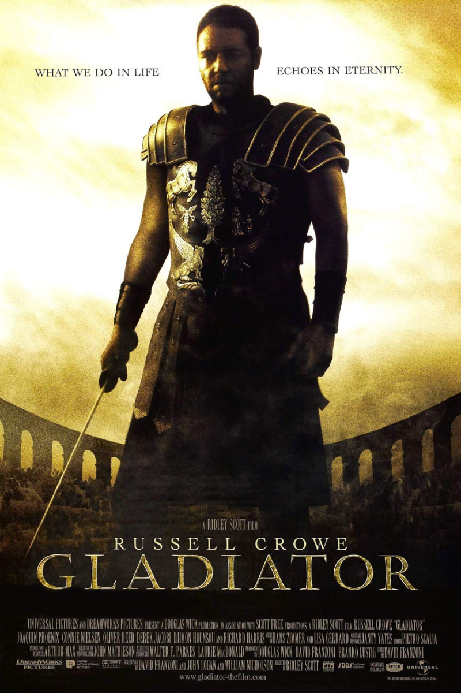
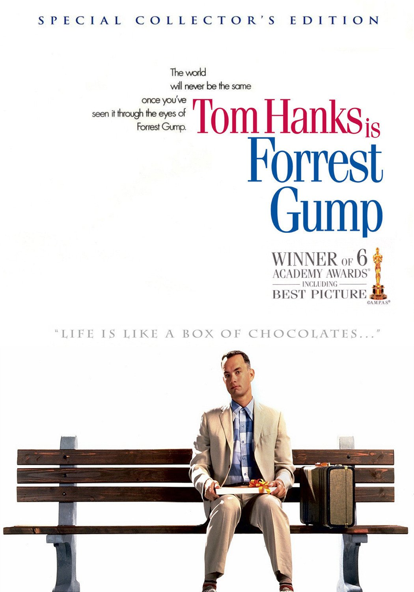
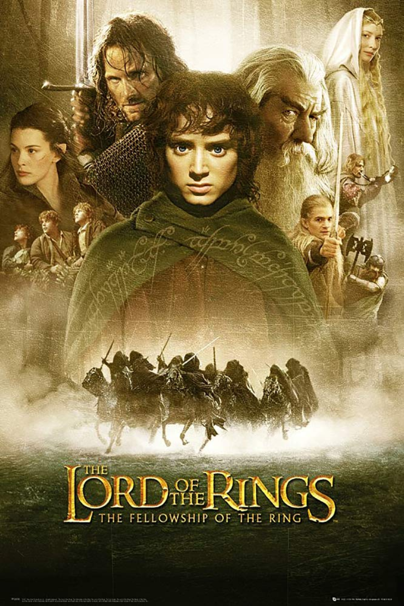
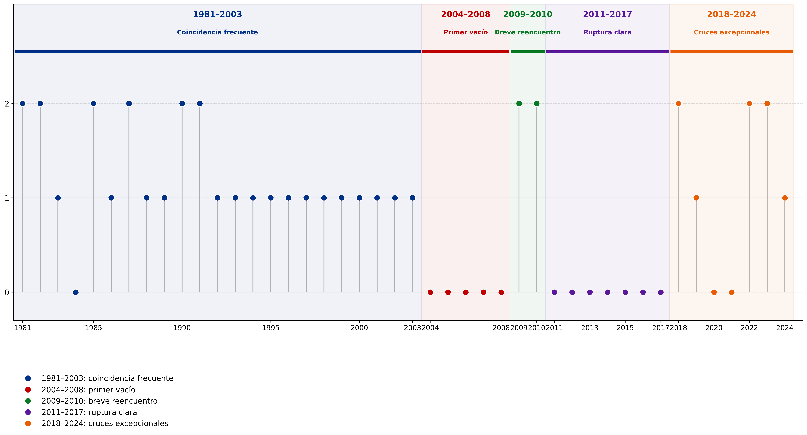

Antes, la taquilla también podía
sentarse en primera fila
Una pluma volando sobre Savannah, Georgia, y cayendo a los pies de un joven sentado en un banco marca el inicio de la historia de Forrest Gump.
En 1994, fue una de las películas más taquilleras del año y además ganó el Oscar a Mejor Película. Durante esas décadas, esto no era extraño: el éxito comercial y el prestigio todavía podían compartir escenario.

1994
Ganadora
Oscar a Mejor Película
Sin embargo...
Desde el 2000 solo 000 fueron nominadas a la categoría Mejor Película de los Óscar. Solo 3 ganaron una estatuilla.

Entonces...¿Cómo definirías hoy lo que es una buena película?
Hoy el éxito parece tener dos caminos: romperla en la taquilla o triunfar en el Teatro Dolby.
Durante varias décadas, estos cruces no eran extraños.
Pero algo empezó a cambiar. La coincidencia entre taquilla y prestigio dejó de ser habitual.
¿Cuándo comenzó a romperse el vínculo entre taquilla y prestigio?
Este mapa permite observar en qué años las películas más taquilleras todavía lograban entrar a la conversación de los Óscar y en cuáles esa coincidencia comenzó a desaparecer. Así, la brecha deja de ser solo una impresión y empieza a verse como una transformación histórica.
Entre fines de los setenta y comienzos de los 2000, las películas más vistas todavía podían entrar con frecuencia a la categoría más importante de los Oscar. Después, la relación comenzó a quebrarse.
LA GRIETA
Entre 1981 y 2003, casi todos los años tuvieron al menos una película taquillera nominada o ganadora a Mejor Película. Después de 2003, esa continuidad se volvió frágil.

Dos caminos para triunfar
Todos creemos saber qué es una película exitosa. Pero en Hollywood, el éxito puede significar cosas distintas: vender millones de entradas, ganar el Óscar, convertirse en franquicia, sobrevivir en la memoria o volver una y otra vez al circuito de premios.
Taquilla
Consideramos como camino comercial las películas que destacaron por su recaudación entre 1977 y 2025.
Presiona y conocerás
Premios Oscar
Consideramos como camino del prestigio las películas nominadas o ganadoras en la categoría Mejor Película.
Camino del prestigio
Premios Oscar
Esta base reúne películas nominadas y ganadoras en la categoría Mejor Película.
Camino comercial
Taquilla
Esta base reúne películas que destacaron por su recaudación y permite observar qué tipo de cine logró llenar salas.
El éxito que llena salas
El cine comercial se volvió cada vez más amplio, exportable y apto para públicos masivos. Hollywood encontró una fórmula: películas suficientemente intensas para no parecer infantiles, pero suficientemente moderadas para no excluir audiencias.
¿Qué tipo de películas empezó a privilegiar la taquilla?
Lo que podemos ver es un giro de la gran pantalla: la taquilla empezó a favorecer películas menos restringidas, capaces de reunir adolescentes, familias y públicos diversos en salas cada vez más globales y masivas. La categoría PG-13 resume esa estrategia: permite acción, conflicto y espectáculo sin cerrar el acceso a grandes audiencias. Así, triunfar comercialmente significa ser más exportable, flexible y visible en circuitos internacionales de exhibición masiva actuales.
Este es el tráiler de Ne Zha 2, la película animada más taquillera de todos los tiempos: logró recaudar US$2.267.446.370 a nivel mundial.
Ticket de taquilla